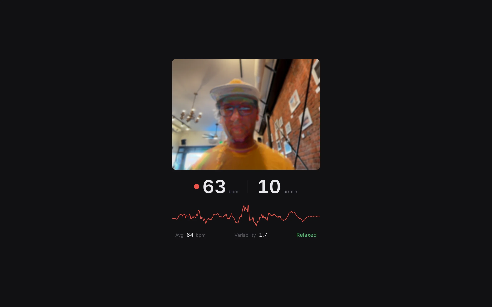
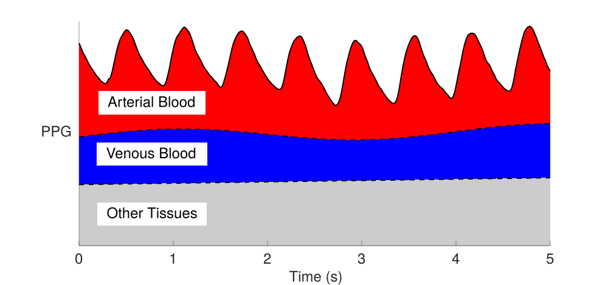
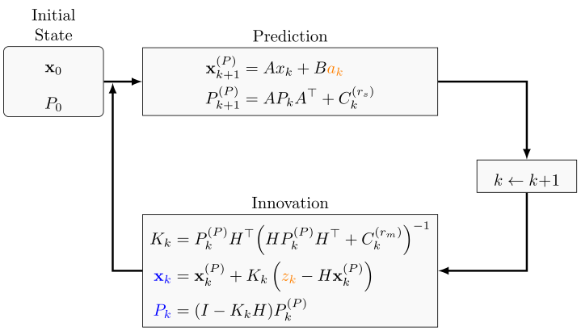

Your webcam can see your heartbeat. Each cardiac cycle pushes blood through the capillaries in your face, causing sub-pixel color fluctuations as oxygenated hemoglobin absorbs green light. These fluctuations are invisible to the naked eye but measurable in the raw pixel stream. Remote photoplethysmography (rPPG) extracts a pulse signal from these color changes, and from that signal you can derive heart rate, heart rate variability, and even breathing rate. This project does all of that in real time, entirely in the browser, with nothing but a webcam.

{kind=link}
Face detection and ROI placement
The signal pipeline begins with MediaPipe FaceLandmarker, which provides 478 facial landmarks per frame using a float16 model running on the GPU. Three regions of interest are constructed from landmark subsets: a forehead ROI (landmarks 10, 67, 69, 104, 108, 151, 284, 298, 299, 337), a left cheek ROI (123, 147, 187, 205, 206, 216), and a right cheek ROI (352, 376, 411, 425, 426, 436). Each ROI is the axis-aligned bounding box of its landmarks, padded by 4 pixels.
Face detection runs every 3 frames to limit computational cost. Each ROI is downsampled to \(32 \times 32\) pixels, and the mean R, G, B values are computed across all pixels that pass a skin-tone classifier. The classifier operates in normalized chrominance space:
\[r_n = \frac{R}{R + G + B}, \qquad g_n = \frac{G}{R + G + B}\]A pixel is classified as skin if the sum \(R + G + B > 60\) and the normalized coordinates fall within \(r_n \in (0.35, 0.6)\), \(g_n \in (0.25, 0.4)\). This rejects background pixels, specular highlights, and shadowed regions before they corrupt the mean color signal.
The POS algorithm
The core pulse extraction uses the Plane Orthogonal to Skin (POS) algorithm (Wang et al., 2017), which projects temporal color variations onto a plane in normalized RGB space that is orthogonal to the skin-tone direction. This projection suppresses specular reflections and motion artifacts while preserving the blood volume pulse.
Given time series of spatially averaged color channels \(R(t)\), \(G(t)\), \(B(t)\) from the three face ROIs, the algorithm processes overlapping windows of length \(L = 48\) samples (1.6 seconds at 30 fps). Within each window starting at frame \(t_0\):
1. Temporal normalization. Each channel is divided by its window mean to remove the DC component and reduce sensitivity to skin tone and illumination:
\[\tilde{C}(t) = \frac{C(t)}{\bar{C}}, \qquad \bar{C} = \frac{1}{L}\sum_{j=0}^{L-1} C(t_0 + j), \qquad C \in \{R, G, B\}\]2. POS projection. Two signals are constructed that lie in the plane orthogonal to the skin-tone vector \([1, 1, 1]^\top\) in normalized color space:
\[S_1(t) = \tilde{G}(t) - \tilde{B}(t)\] \[S_2(t) = \tilde{G}(t) + \tilde{B}(t) - 2\tilde{R}(t)\]The first projection \(S_1\) captures the difference between green and blue channels, which is sensitive to blood volume changes (hemoglobin absorbs green light more than blue). The second projection \(S_2\) adds a correction term involving the red channel. Together, these two signals span the plane orthogonal to uniform illumination changes.
3. Adaptive combination. The two projections are combined with a data-driven weight that minimizes the contribution of non-pulse components:
\[\alpha = \frac{\sigma(S_1)}{\sigma(S_2)}\] \[H(t) = S_1(t) + \alpha \cdot S_2(t)\]The ratio of standard deviations adapts the combination to the current signal characteristics. When motion artifacts dominate \(S_2\), its standard deviation inflates and \(\alpha\) shrinks, automatically down-weighting the corrupted projection.
4. Overlap-add. The windowed pulse signal is standardized and accumulated into the output buffer with overlap averaging:
\[p(t) \mathrel{+}= \frac{H(t) - \bar{S}_1}{\max\bigl(\sigma(S_1),\, 10^{-10}\bigr)} \cdot \frac{1}{L}\]The overlap-add with \(1/L\) normalization smooths discontinuities at window boundaries and produces a continuous pulse waveform stored in a 256-sample ring buffer.
Spectral peak detection
The raw POS signal contains the pulse but also noise, baseline drift, and harmonics. A four-stage processing pipeline extracts the dominant heart rate frequency.
Detrending. A moving-average filter with window size 60 is subtracted from the signal to remove slow baseline drift:
\[x_\text{detrended}(t) = x(t) - \frac{1}{|W(t)|}\sum_{j \in W(t)} x(j)\]where \(W(t)\) is the set of indices within 30 samples of \(t\), clamped to the signal boundaries.
Bandpass filtering. The signal is filtered to the heart rate frequency range \([f_\text{min}, f_\text{max}] = [0.667, 3.333]\) Hz (corresponding to 40-200 bpm). The filter is implemented in the frequency domain: the signal is zero-padded to the next power of two, transformed via FFT, all bins outside the passband are zeroed, and the inverse FFT recovers the filtered signal.
Windowing. A Hamming window is applied to suppress spectral leakage before the final FFT:
\[w(n) = 0.54 - 0.46 \cos\!\left(\frac{2\pi n}{N - 1}\right)\]FFT and peak finding. The windowed signal is zero-padded to the next power of two and transformed using a Cooley-Tukey radix-2 FFT with bit-reversal permutation. The magnitude spectrum is computed over the first half of the output:
\[|X(k)| = \sqrt{\operatorname{Re}(X_k)^2 + \operatorname{Im}(X_k)^2}, \qquad k = 0, \ldots, N/2 - 1\]The dominant peak is found by scanning the bins corresponding to the passband \([f_\text{min}, f_\text{max}]\). A noise floor rejection test requires the peak magnitude to exceed twice the median magnitude within the passband. If it passes, parabolic interpolation refines the peak location to sub-bin precision:
\[\hat{k} = k_\text{peak} + \frac{1}{2} \cdot \frac{\alpha - \gamma}{\alpha - 2\beta + \gamma}\]where \(\alpha = |X(k_\text{peak} - 1)|\), \(\beta = |X(k_\text{peak})|\), \(\gamma = |X(k_\text{peak} + 1)|\). The refined frequency is \(\hat{f} = \hat{k} \cdot f_s / N\), and the raw BPM estimate is \(60\hat{f}\). A spectral confidence metric is computed as the ratio of peak power to total passband power:
\[c = \frac{|X(k_\text{peak})|^2}{\sum_{k \in \text{band}} |X(k)|^2}\]Estimates with confidence below 0.08 are discarded.
Breathing rate estimation
Breathing rate is estimated from three independent sources, each capturing a different physical manifestation of respiration.
Chest motion. A chest ROI is placed below the face, anchored to the nose tip (landmark 1) and chin (landmark 152). Its vertical position starts 0.3 face-heights below the chin, with width 1.6 and height 1.2 times the face height. The ROI is downsampled to \(32 \times 32\) pixels, and the frame-to-frame motion energy is computed as the RMS of green-channel pixel differences:
\[E(t) = \sqrt{\frac{1}{N_\text{px}}\sum_{i=1}^{N_\text{px}} \bigl(G_i(t) - G_i(t-1)\bigr)^2}\]The green channel is used because it has the highest signal-to-noise ratio for physiological signals. The motion energy time series oscillates at the breathing frequency as the chest rises and falls. It is processed through the same pipeline as the pulse signal: detrend (window size 150) \(\to\) bandpass \([0.1, 0.6]\) Hz (6-36 breaths/min) \(\to\) Hamming window \(\to\) FFT with 4\(\times\) zero-padding \(\to\) peak detection. The buffer holds 900 samples (30 seconds at 30 fps), and a minimum of 240 samples (8 seconds) is required.
Facial landmark displacement. Breathing causes subtle vertical oscillation of the face. The average \(y\)-coordinate of three MediaPipe landmarks (4: nose tip, 6: nose bridge, 152: chin) is tracked at every face detection step, producing a time series sampled at \(30/3 = 10\) Hz. This signal undergoes the same spectral pipeline with a detrend window of 50 and a minimum of 80 samples. Because the sample rate differs from the camera frame rate, the FFT frequency bins are scaled accordingly.
Respiratory sinus arrhythmia. Heart rate is not constant within a breath cycle. It accelerates during inhalation and decelerates during exhalation, a phenomenon called respiratory sinus arrhythmia (RSA). This modulation encodes the breathing frequency within the heart rate signal itself. To extract it, beat-to-beat RR intervals are computed from the peaks detected in the filtered rPPG signal (with a minimum peak distance of \(\lfloor f_s \cdot 60 / \text{BPM}_\text{max}\rfloor\) samples). Only intervals between \(60/\text{BPM}_\text{max} = 0.3\) s and \(60/\text{BPM}_\text{min} = 1.5\) s are retained. When at least 15 beats are available, the irregular RR interval series is resampled to a uniform 4 Hz tachogram via linear interpolation, then processed through the same spectral pipeline (detrend, bandpass \([0.1, 0.6]\) Hz, Hamming, 4\(\times\) zero-padded FFT, peak detection). The resulting confidence is discounted by a factor of 0.8 to reflect the indirect nature of RSA-derived breathing estimates.
Sensor fusion
Each measurement source produces a rate estimate with an associated confidence. Rather than averaging or taking the best, all sources are fused through a shared Kalman filter that naturally weights high-confidence measurements more heavily and provides temporal smoothing.
The state vector is \(\mathbf{x} = [x_0,\, x_1]^\top\), where \(x_0\) is the current rate (bpm or breaths/min) and \(x_1\) is its time derivative (rate of change). A constant-velocity process model predicts the state forward:
\[\mathbf{x}^- = \mathbf{F}\mathbf{x}, \qquad \mathbf{F} = \begin{bmatrix} 1 & \Delta t \\ 0 & 1 \end{bmatrix}\]The predicted covariance incorporates process noise proportional to \(\Delta t\):
\[\mathbf{P}^- = \mathbf{F}\mathbf{P}\mathbf{F}^\top + q \begin{bmatrix} \Delta t^3/3 & \Delta t^2/2 \\ \Delta t^2/2 & \Delta t \end{bmatrix}\]where \(q\) is the process noise intensity: 0.25 for heart rate, 0.06 for breathing rate. A higher \(q\) allows the filter to track faster changes in heart rate; a lower \(q\) reflects the expectation that breathing rate varies more slowly.

{kind=link}
Each measurement \(z\) enters through the observation model \(\mathbf{H} = [1,\, 0]\) with measurement variance \(R\). The innovation (prediction error) and its variance are:
\[y = z - x_0^-, \qquad S = P_{00}^- + R\]An innovation gate rejects outliers: if \(y^2 / S > 9\) (exceeding 3\(\sigma\)), the measurement is discarded. Otherwise, the Kalman gain is computed and the state is corrected:
\[\mathbf{K} = \frac{1}{S}\begin{bmatrix} P_{00}^- \\ P_{10}^- \end{bmatrix}, \qquad \mathbf{x}^+ = \mathbf{x}^- + \mathbf{K}y, \qquad \mathbf{P}^+ = (\mathbf{I} - \mathbf{K}\mathbf{H})\mathbf{P}^-\]The measurement variance \(R\) encodes both the intrinsic noise of each source and the confidence of the current estimate:
\[R = \frac{R_0}{\max(c,\, 0.05)}\]where \(R_0\) is the base variance and \(c\) is the spectral confidence. At high confidence (\(c = 0.5\)), a heart rate measurement enters with \(R = 4/0.5 = 8\). At the confidence floor (\(c = 0.05\)), the same source enters with \(R = 80\), contributing 10\(\times\) less to the state update. The base variances by source are:
| Source | \(R_0\) | Interpretation |
| Heart rate (POS spectral) | 4 | \(\pm 2\) bpm at peak confidence |
| Breathing (landmark) | 4 | \(\pm 2\) br/min |
| Breathing (chest motion) | 9 | \(\pm 3\) br/min |
| Breathing (RSA) | 12 | \(\pm 3.5\) br/min |
Heart rate has a single measurement source (POS spectral peak) feeding its own Kalman filter. Breathing rate has three sources (landmark, chest motion, RSA) all feeding a shared Kalman filter, with each update weighted by the source's variance. The final output confidence is \(1 / (1 + P_{00})\), where \(P_{00}\) is the current state variance.
Motion amplification
Every pixel in the video feed has a time series of RGB values across frames. Some of those changes are too small to see: the slight color shift when blood pulses through capillaries, the tiny displacement of the chest during breathing. Motion amplification makes these invisible changes visible by isolating the temporal frequency band of interest, amplifying it, and adding it back to the original frame.
The temporal bandpass is implemented as the difference of two first-order IIR low-pass filters, running per-pixel on the GPU. Each filter has the recurrence:
\[L_\text{new}(x, y) = L(x, y) + \alpha \bigl(I(x, y, t) - L(x, y)\bigr)\]where \(I(x, y, t)\) is the current frame, \(L(x, y)\) is the filter state, and the smoothing coefficient is derived from the cutoff frequency:
\[\alpha = 1 - e^{-2\pi f_c / f_s}\]A smaller \(\alpha\) produces a slower-moving average (lower cutoff); a larger \(\alpha\) tracks the input more closely (higher cutoff). Two such filters with cutoffs \(f_\text{low}\) and \(f_\text{high}\) produce a temporal bandpass via subtraction. Two bandpass pairs run in parallel: a pulse band spanning \([0.667, 3.333]\) Hz (40-200 bpm) and a breathing band spanning \([0.1, 0.6]\) Hz (6-36 breaths/min). The entire operation runs in a single fragment shader with multiple render targets (MRT), writing six textures per pass: the amplified display output, four IIR filter state textures, and a complex correlation state texture for cardiac beamforming. Double-buffered ping-pong framebuffers prevent read-write hazards.
This shares the temporal filtering principle with Eulerian Video Magnification (Wu et al., 2012), but the full EVM pipeline decomposes each frame into a Laplacian spatial pyramid and applies the temporal filter at each resolution level independently. That lets it amplify fine detail differently from coarse structure, and each pyramid level is spatially smoothed by construction. We skip the pyramid and instead operate at full resolution, using a post-hoc two-pass separable Gaussian blur (9-tap kernel, \(\sigma \approx 2.5\), weights \([0.172, 0.158, 0.125, 0.084, 0.048]\)) to suppress spatial noise in the amplified output.
Broadband pulse amplification
Before a heart rate estimate is available, the pulse band is amplified with a broadband approach. The temporal bandpass signal is first decomposed into luminance and chrominance using BT.601 luma weights:
\[Y = 0.299R + 0.587G + 0.114B, \qquad \mathbf{C} = \mathbf{B}_\text{pulse} - Y\mathbf{1}\]Only the chrominance component \(\mathbf{C}\) is amplified, since the blood volume pulse manifests as a color shift (green absorption by hemoglobin) rather than a brightness change. Amplifying luminance would produce distracting edge ghosts. A warm tint \((1.3, 0.85, 0.85)\) shifts the amplified flush toward red, matching the natural appearance of blood perfusion. The broadband signal is masked to the face (36-point oval from MediaPipe landmarks, expanded 1.2\(\times\) from the centroid, rasterized to an \(80 \times 60\) binary mask) at \(15\times\) gain.
Phase-coherent cardiac beamforming
The broadband bandpass amplifies everything in the 0.67-3.33 Hz range, including noise. Once the Kalman filter has converged on a heart rate estimate, the system crossfades to a phase-coherent amplification path that acts as a narrowband matched filter locked to the cardiac frequency. This is analogous to lock-in amplification: multiply each pixel's signal by a reference phasor at the cardiac frequency, then low-pass filter. Only the component coherent with the heartbeat survives; everything else averages to zero.
The frame loop maintains a cardiac phase oscillator that advances each frame:
\[\varphi(t) = \varphi(t-1) + \frac{2\pi \cdot \text{bpm}}{60 \cdot f_s}\]The reference phasor is \(p(t) = e^{i\varphi(t)} = [\cos\varphi,\, \sin\varphi]\). For each pixel, the tinted chrominance is projected onto a scalar along the normalized tint direction \(\hat{\mathbf{w}} = \text{normalize}(1.3, 0.85, 0.85)\):
\[s(t) = \mathbf{C}_\text{tinted} \cdot \hat{\mathbf{w}}\]This scalar is multiplied by the conjugate of the cardiac phasor and fed into an IIR correlation accumulator:
\[\mathbf{z}(t) = \mathbf{z}(t-1) + \alpha_\text{corr} \bigl(s(t) \cdot \overline{p(t)} - \mathbf{z}(t-1)\bigr)\]where \(\mathbf{z} = [z_r, z_i]\) is a complex correlation state and \(\alpha_\text{corr} = 1 - e^{-1/(\tau \cdot f_s)}\) with time constant \(\tau = 4\) seconds. This IIR integrator is effectively a narrowband filter centered on the cardiac frequency: signals coherent with the heartbeat accumulate constructively in \(\mathbf{z}\), while noise at other frequencies gets averaged away over the 4-second window.
The coherent signal is recovered by demodulating the correlation state back to the current phase:
\[g(t) = \operatorname{Re}\!\bigl(\mathbf{z}(t) \cdot p(t)\bigr) = z_r \cos\varphi - z_i \sin\varphi\]The demodulated signal \(g(t)\) drives the amplification along the tint direction at \(30\times\) gain (twice the broadband path), which is feasible because the phase-coherent filtering has removed most of the noise that would otherwise produce visual artifacts.
The system crossfades between the two paths based on whether a BPM estimate is available. The blend factor \(\beta\) ramps linearly from 0 to 1 over 3 seconds once a heart rate is detected, and decays back to 0 over 1 second if the estimate is lost:
\[\text{pulse}_\text{final} = (1 - \beta) \cdot \text{broadband} + \beta \cdot \text{guided}\]Breathing amplification
The breathing band amplifies full RGB motion at \(15 \times (1 - 0.5m)\), where \(m\) is the face mask value, so respiratory motion is amplified more strongly on the body (where chest movement is visible) and suppressed on the face.
Both pulse and breathing deltas pass through a soft saturation function that adapts to signal strength:
\[\mathbf{d}_\text{out} = \mathbf{d} \cdot \frac{\ell \cdot \tanh(\|\mathbf{d}\| / \ell)}{\|\mathbf{d}\|}\]where \(\ell\) is a per-band limit (0.10 for pulse, 0.15 for breathing). Weak signals receive nearly full gain; strong signals are smoothly compressed toward the limit, avoiding the hard clipping artifacts that would result from clamping.
Heart rate variability
When at least 8 consecutive RR intervals are available, two time-domain HRV metrics are computed:
SDNN (standard deviation of NN intervals) measures overall variability:
\[\text{SDNN} = \sqrt{\frac{1}{n-1}\sum_{i=1}^{n}\bigl(\text{RR}_i - \overline{\text{RR}}\bigr)^2} \times 1000 \;\text{ms}\]RMSSD (root mean square of successive differences) captures short-term, beat-to-beat variability and is a marker of parasympathetic (vagal) tone:
\[\text{RMSSD} = \sqrt{\frac{1}{n-1}\sum_{i=2}^{n}\bigl(\text{RR}_i - \text{RR}_{i-1}\bigr)^2} \times 1000 \;\text{ms}\]Both metrics are converted from seconds to milliseconds and rounded to one decimal place. SDNN reflects the total power of all cyclic components acting on heart rate. RMSSD, by filtering out slow trends and retaining only successive differences, isolates the high-frequency component that is predominantly vagally mediated. A higher RMSSD generally indicates greater parasympathetic activity and cardiovascular fitness.
Implementation
The application is built with Svelte 5 and Vite, deployed to GitHub Pages. The camera captures at 640\(\times\)480 at 30 fps. The main frame loop runs via requestAnimationFrame, with face detection every 3 frames and vitals computation every 60 frames. A 150-frame calibration period stabilizes the IIR filter states before measurements begin. Face tracking has a 500 ms grace period before clearing ROIs on momentary detection drops. If the face is lost for more than 10 seconds, all signal buffers, filter states, and the cardiac phase oscillator are reset and calibration restarts.
The WebGL2 renderer uses RGBA8 textures with LINEAR filtering and CLAMP_TO_EDGE wrapping. The video frame is uploaded to a texture each frame via texImage2D. All signal processing (POS, FFT, peak detection, Kalman filter) runs on the main thread in pure TypeScript with Float64Array arithmetic. The FFT uses in-place Cooley-Tukey with bit-reversal permutation, and the bandpass filter operates in the frequency domain (forward FFT, zero out-of-band bins, inverse FFT). No external signal processing libraries are used.